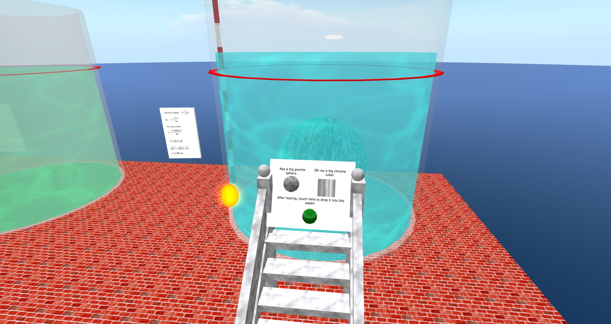
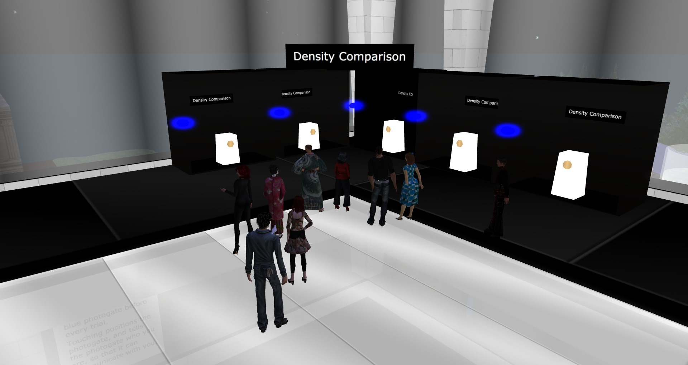
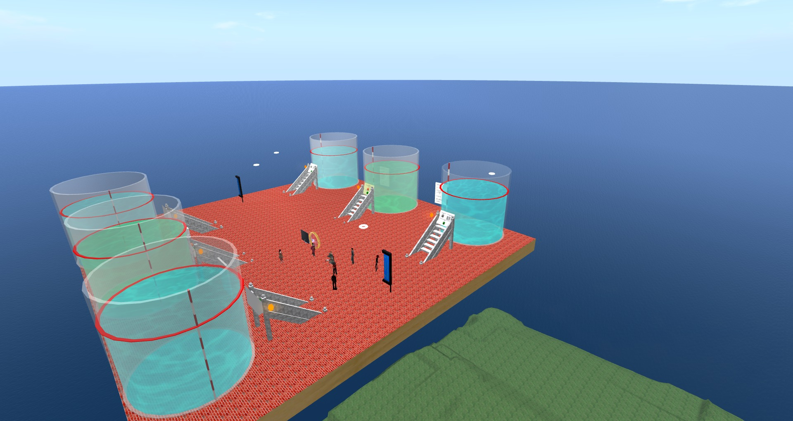
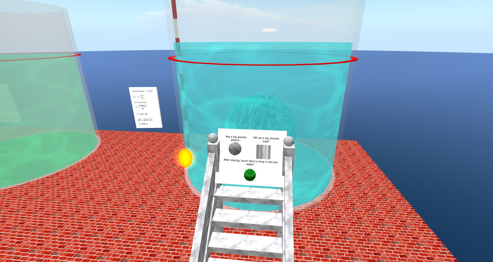
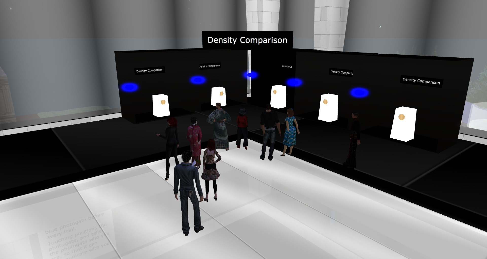
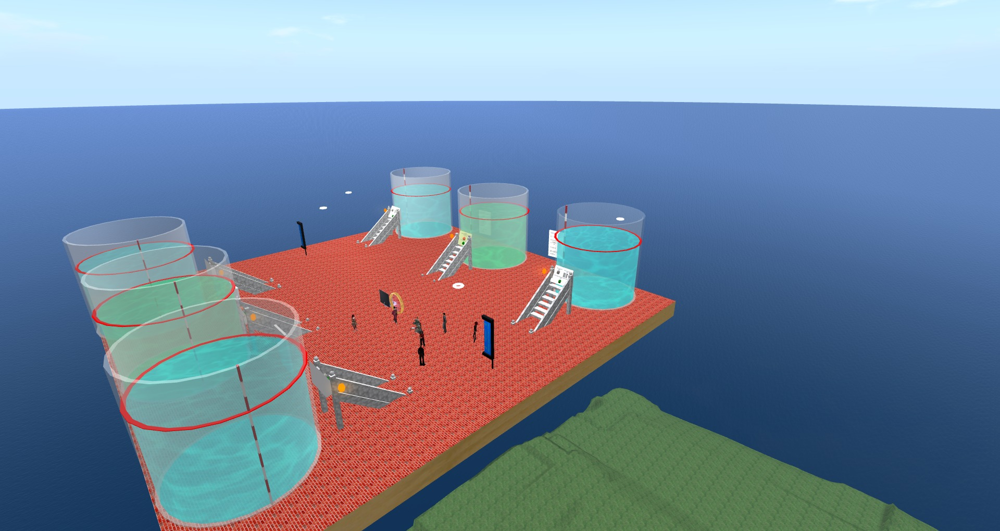
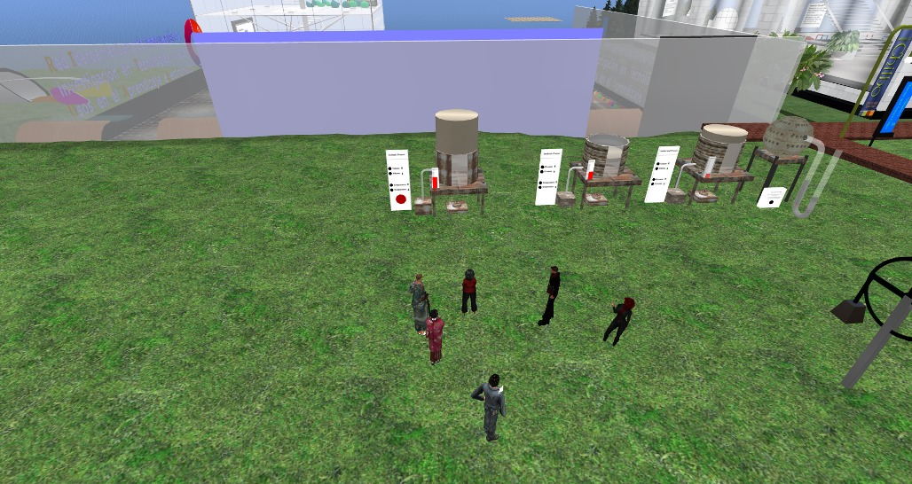
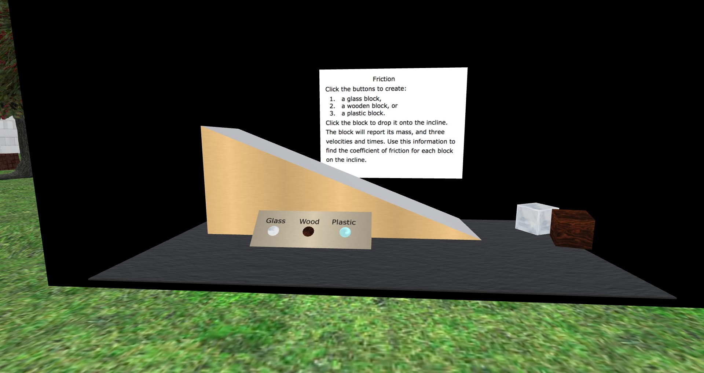
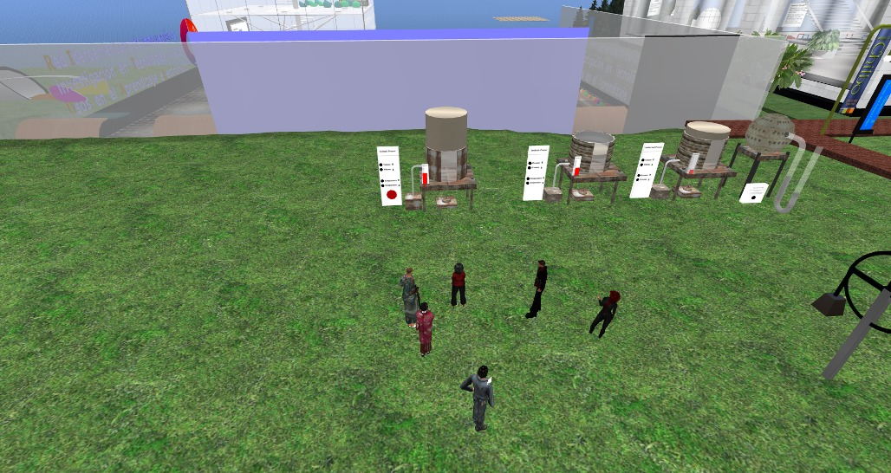
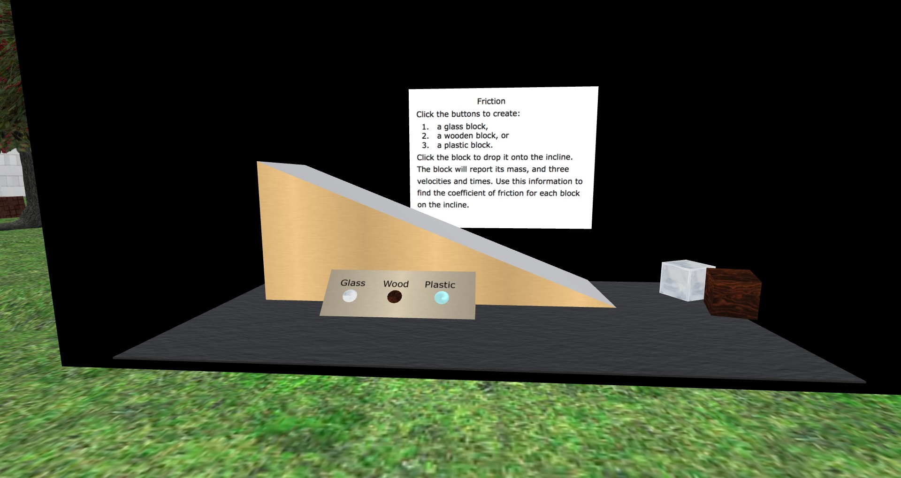

Video zum Thema Ableitungen
Ich habe ein schönes Video mit integrierten Übungen für den Einstieg in das Thema Ableitungengefunden.
more ...Ich habe ein schönes Video mit integrierten Übungen für den Einstieg in das Thema Ableitungengefunden.
more ...db4o steht für "database for objects" und ist eine objekt orientierte Datenbank. Die Inhalte werden also nicht in Tabellen abgelegt, sondern direkt als Objekt gespeichert.
Ich habe mir das Paket angeschaut und ein Beispiel für Java programmiert und mitgefilmt. Das Ganze habe ich in der IDE Eclipse durchgeführt.
more ...Kamera aufstellen, auslösen und fertig ist das 3D-Modell der eigenen Wohnung. Leider kostet der Spaß mit 4500$ im Moment noch recht viel.
Matterport taking pre-orders for 3D interior mapping camera
more ...Dokumentation über die Entstehungsgeschichte von Minecraft - leider sehr einseitig dargestellt. Ab Minute 58:44 wird ein komplett in Minecraft entworfener 16Bit-Rechner vorgestellt. Im Anschluss folgen weitere Einsatzmöglichkeiten von Minecraft in der Schule.
more ...Unser Spiel aus dem ersten Teil funktioniert im Prinzip schon, sieht aber noch gar nicht schön aus. Daher werden wir im nächsten Teil etwas Farbe und Texturen in die Hand nehmen und die Landschaft anschaulich gestalten. Außerdem kümmern wir uns darum, dass die Kugeln sich auch bewegen und wie echte …
more ...Unity ist eine Programmierumgebung mit der du leicht Spiele erstellen kannst. 3D-Objekte werden in einer Szene arrangiert und die Interaktion zwischen den Objekten wird mit Skripten in C# oder Javascript programmiert.
In den folgenden Videos zeige ich dir, wie du mit Unity ein kleines Spiel erstellen kannst. Bei dem Spiel …
more ...Die SLED-Gruppe lud heute ein zu einer Führung durch "Oddprofessor's Science Center" in Second Life. Vicki Robinson (alias Oddprofessor Snoodle) stellte verschiedene Physik-Experimente vor, die von echten Studenten in einer virtuellen Welt durchgeführt werden können. In der folgenden Bildergalerie nehme ich dich mit auf einen kleinen Rundgang.
 





 



Update: Es existiert …
more ...Gestern Abend war ich in der Schule - aber in keiner gewöhnlichen Schule, sondern der SecondLife-Schule. Hier lernt man den Umgang mit SecondLife - das ist eine virtuelle Welt, die von allerlei Avataren seit nun über 10 Jahren bevölkert wird.
Auf dem Stundenplan stand "Trampolin bauen". Da ich vor vielen Jahren das …
more ...Im letzte Beitrag habe ich das Perlenspiel-Framework vorgestellt und gezeigt, wie man damit ein Vier-Gewinnt-Spiel programmieren kann. "Leider" ist das Programm etwas kompliziert geworden und ich habe nach einer einfacheren Variante gesucht, um das Framework sinnvoll vorzustellen. Nun ist mir das Farbwechselspiel eingefallen. Eine Erklärung des Spiels und eine online-Version …
more ...Mit Hilfe des Perlenspiel-Frameworks lassen sich einfach Spiele in Javascript programmieren. Im folgenden Video zeige ich, wie man den Klassiker "Vier Gewinnt" damit umsetzen kann. In meinem Wiki findet ihr den vollständigen Quelltext zu diesem Spiel.
 more ...
more ...